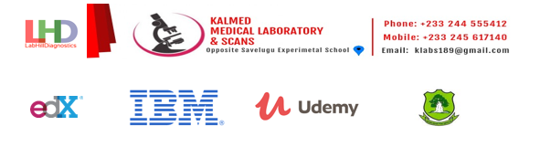

SWE Samuel Elorm Zerd
Summary
“Versatile innovation enthusiast, focused on applicable Sciences with
exceptional Research Skills & Well-organized˝
EDUCATION
-
Bachelors of Science BSc - (Applied Science)
At UDS- University for Development Studies CGPA: 4.02
Ghana - Tamale
CGPA: 4.02
2014 - 2018
-
Certificates of Higher Education (SSCE)
A pre-tertiary education at Anlo Senior High School
Ghana - Tamale
CGPA: 4.02
2010 - 2014
-
Pre-High School
A pre-tertiary education at At IMFH International School
Ghana - Tamale
CGPA: 4.02
2014
WORK EXPERIENCE
Dec. 2020 – Dec. 2021 (12-Months)
-
Designing of business plans and models for the laboratory.
- Carried out routine laboratory examinations at main branch and the other branches.
- Management of clients and prescriber relations to the laboratory vice versa.
- Oversaw the expansion of LHD to Buipe and Savelugu Branches.
Laboratory Technician – Manager
At KALMED Diagnostics Center Ghana - Tamale
Dec. 2019 – Oct. 2020 (10-Months)
- Regularly assessed the daily routine laboratory safety precautions, procedures and protocols for optimal progress.
- Carried out accurate phlebotomy sampling and sample identification for further processing.
- Kept laboratory procedures in compliance with all HEFRAG, GHS applicable guidelines and regulations, ensuring high levels of productivity and relevant job-related progressions.
- Ensured valid test results through supervision and standardization for improved department efficacy.
Service Personnel
At GHS - Sunyani Municipal Hospital Ghana - Tamale
Aug. 2018 – Oct. 2019 (13-Months)
- Carried out accurate phlebotomy sample taking and identification for further test procedures and monitoring.
- Maintained impeccable cleanliness and excellent safety standards across laboratory areas, minimizing risk and error.
- Carefully maintained the patient sample collection and proper stocks.
- Maintained smooth operations of laboratory community through effective and efficient client
